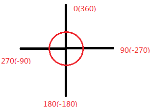
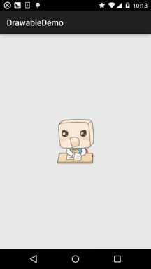

本節の導入：
本節では引き続きAndroidのDrawableリソースについて学んでいきます。前節では以下を学びました：
ColorDrawable；
NinePatchDrawable；
ShapeDrawable；
GradientDrawable！
この4つのDrawable～そして本節では引き続き次の5つのDrawableを学んでいきます。それらはそれぞれ：
BitmapDrawable；
InsertDrawable；
ClipDrawable；
RotateDrawable；
AnimationDrawable!
やはり13種類のDrawableのマインドマップを貼っておきます：
では、本節の内容を始めましょう～

1.BitmapDrawable
Bitmapをラップするもので、ラップしたbitmapをBitmapDrawable領域内でどのように描画するかを設定できます。タイル敷き詰め、引き伸ばし、または画像の元のサイズを保持する方法があります！<bitmap>をルートノードにします！
- srcオプション属性は以下の通りです：
- antialias:画像リソース～
- filter:アンチエイリアスをサポートするかどうか
- dither:ビットマップフィルタリングをサポートするかどうか。サポートする場合、画像の表示がより滑らかになります
- gravity:ビットマップに対してディザリング処理を行うかどうか
- tileMode:ビットマップがコンテナより小さい場合、コンテナ内でのビットマップの相対位置を設定できますdisabled:画像をタイル状に敷き詰めてコンテナを埋めるモードを指定します。これを設定すると、gravity属性は無視されます。以下の値から選択できます：clamp(パターン全体を引き伸ばして敷き詰める)、repeat(元画像サイズ)、mirror(敷き詰め)、
(ミラー敷き詰め)

対応する効果画像：:
<?xml version="1.0" encoding="utf-8"?>
<bitmap xmlns:android="http://schemas.android.com/apk/res/android"
android:dither="true"
android:src="@drawable/ic_launcher.html"
android:tileMode="mirror" />
①XMLでBitmapDrawableを定義する:
BitmapDrawable bitDrawable = new BitmapDrawable(bitmap); bitDrawable.setDither(true); bitDrawable.setTileModeXY(TileMode.MIRROR,TileMode.MIRROR);
2.InsetDrawable
②同じ効果を実現するJavaコードpaddingあるDrawableを別のDrawableの内部に埋め込み、内部に間隔を残すことを表します。Drawableのpadding属性に似ていますが、表すのはDrawableのコンテンツとDrawable自体の間のマージンInsetDrawable！一方、表すのは2つのDrawableとコンテナの間のマージン、コントロールが必要とする
背景が実際の枠線より小さい場合
- 1.drawable、InsetDrawableを使用するのが適しています。例えば、これを使用するとカスタムDialogと画面の間の間隔問題を解決できます。経験済みの方ならご存知でしょうが、layout_marginを設定しても効果はありません。このような場合にInsetDrawableを使用できます！InsetDrawableにinsetXxxを設定して異なる方向のマージンを設定し、Dialogの背景に設定するだけです！
- 2.visible関連属性は以下の通りです：
- 3.insetLeft,insetRight,insetTop,insetBottm:参照するDrawable。空の場合は、Drawable型の子ノードが必要です！
:Drawableが余分なスペースを持つかどうかを設定します:
<?xml version="1.0" encoding="utf-8"?>
<inset xmlns:android="http://schemas.android.com/apk/res/android"
android:drawable="@drawable/test1"
android:insetBottom="10dp"
android:insetLeft="10dp"
android:insetRight="10dp"
android:insetTop="10dp" />
:左右上下のマージンを設定します：
InsetDrawable insetDrawable = new InsetDrawable(getResources()
.getDrawable(R.drawable.test1), 10, 10, 10, 10);
①XMLでの使用：

3.ClipDrawable
Javaコードでの使用clip>
使用効果画像：
- clipOrietntionClipは「切り抜く」という意味に訳せます。ClipDrawableはビットマップから一部分を切り抜くものと理解できます。AndroidのプログレスバーはClipDrawableを使用して実装されています。設定されたlevelの値に応じて切り抜き領域のサイズが決まります。ルートノードは<
- gravity関連属性は以下の通りです
- drawable:切り抜きの方向を設定します。水平と垂直の2方向を設定できます
:どの位置から切り抜きを開始するか
:参照するdrawableリソース。空の場合はDrawable型の子ノードが必要です：
ps:このDrawable型の子ノードとは、<clip>の中に次のような文を追加することです：
このように...：

使用例：
核心：コードでClipDrawableのlevelの値を変更します！Levelの値は0〜10000です！:
<?xml version="1.0" encoding="utf-8"?>
<clip xmlns:android="http://schemas.android.com/apk/res/android"
android:clipOrientation="horizontal"
android:drawable="@mipmap/ic_bg_meizi"
android:gravity="left" />
実行効果画像 コード実装
<LinearLayout xmlns:android="http://schemas.android.com/apk/res/android"
xmlns:tools="http://schemas.android.com/tools"
android:layout_width="match_parent"
android:layout_height="match_parent"
android:orientation="vertical">
<ImageView
android:id="@+id/img_show"
android:layout_width="match_parent"
android:layout_height="match_parent"
android:src="@drawable/clip_bg.html" />
</LinearLayout>
①ClipDrawableのリソースxmlを定義します:
public class MainActivity extends AppCompatActivity {
private ImageView img_show;
private ClipDrawable cd;
private Handler handler = new Handler() {
@Override
public void handleMessage(Message msg) {
if (msg.what == 0x123) {
cd.setLevel(cd.getLevel() + 500);
}
}
};
@Override
protected void onCreate(Bundle savedInstanceState) {
super.onCreate(savedInstanceState);
setContentView(R.layout.activity_main);
img_show = (ImageView) findViewById(R.id.img_show);
// 核心实现代码
cd = (ClipDrawable) img_show.getDrawable();
final Timer timer = new Timer();
timer.schedule(new TimerTask() {
@Override
public void run() {
handler.sendEmptyMessage(0x123);
if (cd.getLevel() >= 10000) {
timer.cancel();
}
}
}, 0, 300);
}
}
②activity_mainメインレイアウトファイルにImageViewを設定し、srcをclipDrawableに設定します！
4.RotateDrawable
srcであることを忘れないでください。blackgroundと書いてしまうとヌルポインタ例外が発生します！！！！
③MainActivity.javaでsetLevelを使用して切り抜き領域のサイズを設定します：
- fromDegreesさて、なかなか面白いですね。女の子の画像は私に頼まないでください。百度にたくさんありますよ～
- toDegreesDrawableを回転させるためのものです。回転もsetLevelで制御し、最大値も10000です
- pivotX関連属性は以下の通りです
- pivotY:開始角度。最低のlevel値に対応し、デフォルトは0です
- drawable:終了角度。最高のlevel値に対応し、デフォルトは360です
- visible:基準点のx座標を設定します。値は0〜1で、デフォルトは50%、つまり0.5です
:基準点のY座標を設定します。値は0〜1で、デフォルトは50%、つまり0.5です：

ps:回転した画像が完全に表示されない場合は、上記の2つの値を変更することで解決できます！：
:ビットマップリソースを設定します：

:drawableを表示するかどうかを設定します！：
角度の図は以下の通りです
使用例:
<?xml version="1.0" encoding="utf-8"?>
<rotate xmlns:android="http://schemas.android.com/apk/res/android"
android:drawable="@mipmap/ic_launcher"
android:fromDegrees="-180"
android:pivotX="50%"
android:pivotY="50%" />
実行効果画像 コード実装
public class MainActivity extends AppCompatActivity {
private ImageView img_show;
private RotateDrawable cd;
private Handler handler = new Handler() {
@Override
public void handleMessage(Message msg) {
if (msg.what == 0x123) {
if (cd.getLevel() >= 10000)
Toast.makeText(MainActivity.this, "转完了~",
Toast.LENGTH_LONG).show();
cd.setLevel(cd.getLevel() + 400);
}
}
};
@Override
protected void onCreate(Bundle savedInstanceState) {
super.onCreate(savedInstanceState);
setContentView(R.layout.activity_main);
img_show = (ImageView) findViewById(R.id.img_show);
// 核心实现代码
cd = (RotateDrawable) img_show.getDrawable();
final Timer timer = new Timer();
timer.schedule(new TimerTask() {
@Override
public void run() {
handler.sendEmptyMessage(0x123);
if (cd.getLevel() >= 10000) {
timer.cancel();
}
}
}, 0, 100);
}
}
5.AnimationDrawable
第3点のclipDrawableを少し修正するだけです！
①rotateDrawableのリソースファイルを定義しますanimation-list②activity_main.xmlでsrcを上記のdrawableを指すように変更するだけです。MainActivityではClipDrawableを
rotateDrawableに変更するだけです！:
oneshot本節最後のDrawable、AnimationDrawableはAndroidでフレームアニメーションを実装するためのものです。一連のDrawableを一定の順序に従って1フレームずつ再生します。Androidのアニメーションは比較的豊富で、従来のトゥイーンアニメーション、平行移動、スケーリングなどの効果がありますが、ここではAnimationDrawableによるフレームアニメーションのみを紹介します。alpha、scale、translate、rotateなどについては、後のアニメーションの章で詳しく紹介します～durationここでは<>をルートノードとして使用します関連属性とメソッド
:ループ再生するかどうかを設定します。falseでループ再生です！！！：
:フレーム間隔時間。通常は300ミリ秒に設定します：

AniamtionDrawableインスタンスを取得したら、そのstart()メソッドを呼び出してアニメーションを再生する必要があります。また、OnCreate()メソッド内で呼び出しても効果がないことに注意してください。Viewの初期化が完了していないためです。簡単なhandlerを使用してアニメーションの再生を遅延させることができます！もちろん他にも方法があります。以下のリンクを参照してください：：
①Android AnimationDrawableを実行するいくつかの方法:
<?xml version="1.0" encoding="utf-8"?>
<animation-list xmlns:android="http://schemas.android.com/apk/res/android"
android:oneshot="false">
<item
android:drawable="@mipmap/ic_pull_to_refresh_loading01"
android:duration="100" />
<item
android:drawable="@mipmap/ic_pull_to_refresh_loading02"
android:duration="100" />
<item
android:drawable="@mipmap/ic_pull_to_refresh_loading03"
android:duration="100" />
<item
android:drawable="@mipmap/ic_pull_to_refresh_loading04"
android:duration="100" />
<item
android:drawable="@mipmap/ic_pull_to_refresh_loading05"
android:duration="100" />
<item
android:drawable="@mipmap/ic_pull_to_refresh_loading06"
android:duration="100" />
</animation-list>
AnimationDrawableを使用してフレームアニメーションを実装するのは本当に便利です～:
public class MainActivity extends AppCompatActivity {
private ImageView img_show;
private AnimationDrawable ad;
@Override
protected void onCreate(Bundle savedInstanceState) {
super.onCreate(savedInstanceState);
setContentView(R.layout.activity_main);
img_show = (ImageView) findViewById(R.id.img_show);
// 核心实现代码
ad = (AnimationDrawable) img_show.getDrawable();
Handler handler = new Handler();
handler.postDelayed(new Runnable() {
@Override
public void run() {
ad.start();
}
}, 300);
}
}
使用例AnimationDrawable実行効果画像
本節のまとめ：
まずAnimationDrawableのxmlリソースファイルを定義します
クリックしてノートを共有
メモは本記事の内容の拡張である必要があります！
記事投稿はこちらをクリック
登録招待コードの取得方法
メモを共有する前にログイン！
登録招待コードの取得方法